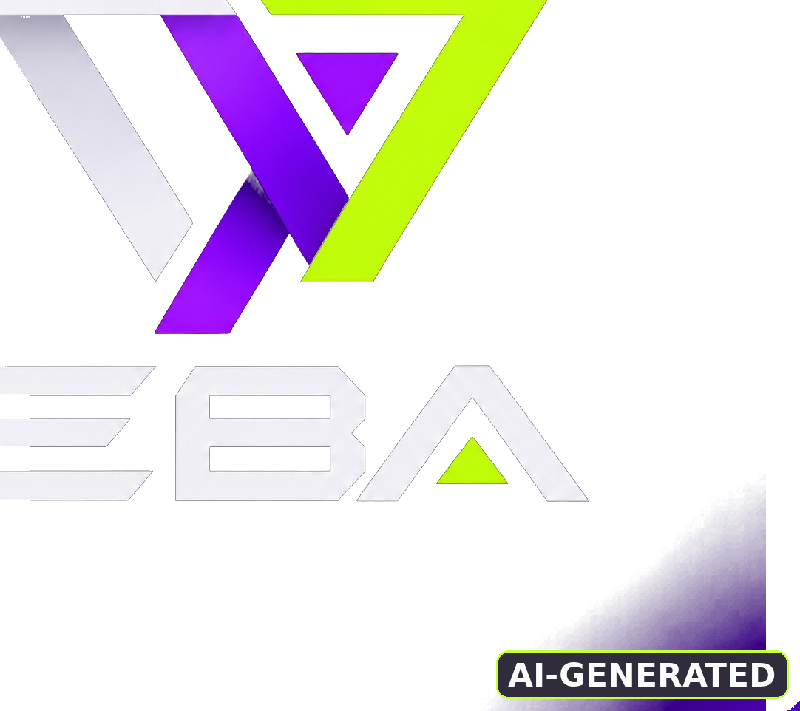

ABANDONED BUT
NOT FORGOTTEN
Storytelling about NASA's Discarded Equipment on the Moon and Mars
A digital library to rediscover stories of space exploration.
Explore a story. Discover a legacy.

AI-GENERATED Sources and creditsStorytelling about NASA's Discarded Equipment on the Moon and Mars
A digital library to rediscover stories of space exploration.
Explore a story. Discover a legacy.
An independent educational project by EBA-07.
The Space Library
Every mission has a story worth remembering. One book is ready to open.
Hi, explorer! I'm EBA, your library guide. Do you know Ranger 7?
Other volumes are future stories. Only Ranger 7 is available in this edition.
Explore the marked objects and the underlined words. Use the arrow keys to turn a page.
Behind the story
Explore the engineering, the historical record and the questions that remained after the mission.
View NASA and JPL referencesEBA-07 / Mission debrief
Ten questions. One space mission. How much did you discover about Ranger 7?
Answer ten questions based on the book. EBA will explain each answer. Earn at least 7 of 10 correct answers to pass.
Based on the documented Ranger missions, NASA/JPL historical records and the story's scientific explanations. See sources.